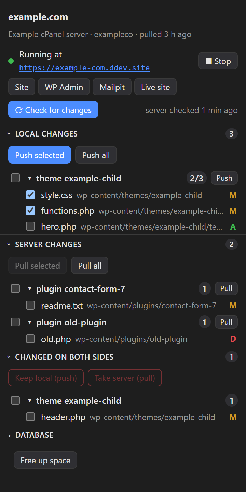

LocalDock
for Orca
Pull WordPress sites from cPanel, run them locally with DDEV, and sync changes back like Source Control.
cPanel over SSHDDEVPush · Pull · ConflictsDatabase backups
Pull WordPress sites from cPanel, run them locally with DDEV, and sync changes back like Source Control.
